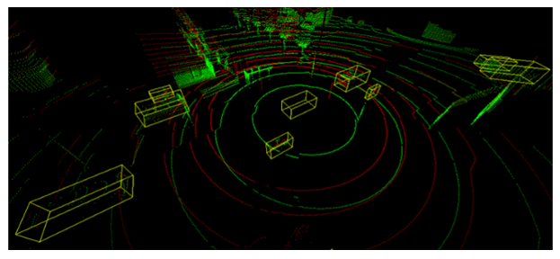
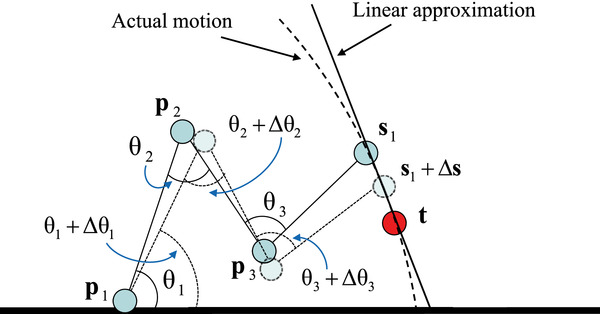
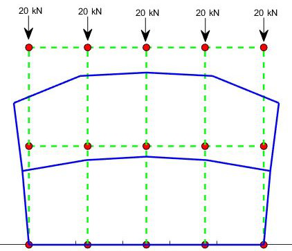

I am passionate about addressing problems that have a direct and meaningful impact on our community. My work has been dedicated to understanding the nature of these challenges and exploring solutions rooted in machine learning, probability, optimization, and simulation.
Interests: Reinforcement Learning, Imitation Learning, Generative AI, Behavior Foundation Models, Large Language Models.
Abstract: Imitation learning (IL) is notably effective for robotic tasks where directly programming behaviors or defining optimal control costs is challenging. In this work, we address a scenario where the imitator relies solely on observed behavior and cannot make environmental interactions during learning. It does not have additional supplementary datasets beyond the expert’s dataset nor any information about the transition dynamics. Unlike state-of-the-art (SOTA) IL methods, this approach tackles the limitations of conventional IL by operating in a more constrained and realistic setting. Our method uses the Markov balance equation and introduces a novel conditional density estimation-based imitation learning framework. It employs conditional normalizing flows for transition dynamics estimation and aims at satisfying a balance equation for the environment. Through a series of numerical experiments on Classic Control and MuJoCo environments, we demonstrate consistently superior empirical performance compared to many SOTA IL algorithms.
Abstract: Imitation Learning (IL) is an important paradigm within the broader reinforcement learning (RL) methodology. Unlike most of RL, it does not assume availability of rewardfeedback. Reward inference and shaping are known to be difficult and error-prone methods particularly when the demonstration data comes from human experts. Classical methods such as behavioral cloning and inverse reinforcement learning are highly sensitive to estimation errors, a problem that is particularly acute in continuous state space problems. Meanwhile, state-of-the-art IL algorithms convert behavioral policy learning problems into distribution-matching problems which often require additional online interaction data to be effective. In this paper, we consider the problem of imitation learning in continuous state space environments based solely on observed behavior, without access to transition dynamics information, reward structure, or, most importantly, any additional interactions with the environment. Our approach is based on the Markov balance equation and introduces a novel conditional kernel density estimation-based imitation learning framework. It involves estimating the environment’s transition dynamics using conditional kernel density estimators and seeks to satisfy the probabilistic balance equations for the environment. We establish that our estimators satisfy basic asymptotic consistency requirements. Through a series of numerical experiments on continuous state benchmark environments, we show consistently superior empirical performance over many state-of-the-art IL algorithms.
Abstract: Imitation Learning (IL) offers a compelling framework within the broader context of Reinforcement Learning (RL) by eliminating the need for explicit reward feedback, a common requirement in RL. In this work, we address IL based solely on observed behavior without access to transition dynamics information, reward structure, or, most importantly, any additional interactions with the environment. Our approach leverages conditional kernel density estimation and performs policy optimization to ensure the satisfaction of the Markov balance equation associated with the environment. This method performs effectively in discrete and continuous state environments, providing a novel solution to IL problems under strictly offline optimization settings. We establish that our estimators satisfy basic asymptotic consistency requirements. Through a series of numerical experiments on continuous state benchmark environments, we show consistently superior empirical performance over many state-of-the-art IL algorithms.
Abstract: In cellular communication systems, radio resources are allocated to users by the MAC scheduler, that typically runs at the base station (BS). The task of the scheduler is to meet the quality of service (QoS) requirements of each data flow while maximizing the system throughput and achieving a desired level of fairness amongst users. Traditional schedulers use handcrafted metrics and are meticulously tuned to achieve a delicate balance between multiple, often conflicting objectives. Diverse QoS requirements of 5G networks further complicate traditional schedulers. In this paper, we propose a novel reinforcement learning based scheduler that learns an allocation policy to simultaneously optimize multiple objectives. Our approach allows network operators to customize their requirements, by assigning priority values to QoS classes. In addition, we adopt a flexible neural-network architecture that can easily adapt to varying number of flows, drastically simplifying training, thus rendering it viable for practical implementation in constrained systems. We demonstrate, via simulations, that our algorithm outperforms conventional heuristics such as M-LWDF, EXP-RULE and LOGRULE and is robust to changes in radio environment and traffic patterns.
Abstract: Reinforcement Learning (RL) for constrained MDPs (CMDPs) is an increasingly important problem for various applications. Often, the average criterion is more suitable than the discounted criterion. Yet, RL for average-CMDPs (ACMDPs) remains a challenging problem. Algorithms designed for discounted constrained RL problems often do not perform well for the average CMDP setting. In this paper, we introduce a new policy optimization with function approximation algorithm for constrained MDPs with the average criterion. The Average-Constrained Policy Optimization (ACPO) algorithm is inspired by trust region-based policy optimization algorithms. We develop basic sensitivity theory for average CMDPs, and then use the corresponding bounds in the design of the algorithm. We provide theoretical guarantees on its performance, and through extensive experimental work in various challenging OpenAI Gym environments, show its superior empirical performance when compared to other state-of-the-art algorithms adapted for the ACMDPs.
Abstract: The past few years have witnessed an increasing interest in improving the perception performance of LiDARs on autonomous vehicles. While most of the existing works focus on developing new deep learning algorithms or model architectures, we study the problem from the physical design perspective, i.e., how different placements of multiple LiDARs influence the learning-based perception. To this end, we introduce an easy-to-compute information-theoretic surrogate metric to quantitatively and fast evaluate LiDAR placement for 3D detection of different types of objects. We also present a new data collection, detection model training and evaluation framework in the realistic CARLA simulator to evaluate disparate multi-LiDAR configurations. Using several prevalent placements inspired by the designs of self-driving companies, we show the correlation between our surrogate metric and object detection performance of different representative algorithms on KITTI through extensive experiments, validating the effectiveness of our LiDAR placement evaluation approach. Our results show that sensor placement is non-negligible in 3D point cloud-based object detection, which will contribute up to 10% performance discrepancy in terms of average precision in challenging 3D object detection settings. We believe that this is one of the first studies to quantitatively investigate the influence of LiDAR placement on perception performance.
Abstract: Recent years have witnessed an increasing interest in improving the perception performance of LiDARs on autonomous vehicles. While most of the existing works focus on developing novel model architectures to process point cloud data, we study the problem from an optimal sensing perspective. To this end, together with a fast evaluation function based on ray tracing within the perception region of a LiDAR configuration, we propose an easy-to-compute information-theoretic surrogate cost metric based on Probabilistic Occupancy Grids (POG) to optimize LiDAR placement for maximal sensing. We show a correlation between our surrogate function and common object detection performance metrics. We demonstrate the efficacy of our approach by verifying our results in a robust and reproducible data collection and extraction framework based on the CARLA simulator. Our results confirm that sensor placement is an important factor in 3D point cloud-based object detection and could lead to a variation of performance by 10% ~ 20% on the state-of-the-art perception algorithms. We believe that this is one of the first studies to use LiDAR placement to improve the performance of perception.
Abstract: Generating multi-vehicle interaction scenarios can benefit motion planning and decision making of autonomous vehicles when on-road data is insufficient. This paper presents an efficient approach to generate varied multi-vehicle interaction scenarios that can both adapt to different road geometries and inherit the key interaction patterns in real-world driving. Towards this end, the available multi-vehicle interaction scenarios are temporally segmented into several interpretable fundamental building blocks, called traffic primitives, via the Bayesian nonparametric learning. Then, the changepoints of traffic primitives are transformed into the desired road to generate collision-free interaction trajectories through a sampling-based path planning algorithm. The Gaussian process regression is finally introduced to control the variance and smoothness of the generated multi-vehicle interaction trajectories. Experiments with simulation results of three typical multi-vehicle trajectories at different road conditions are carried out. The experimental results demonstrate that our proposed method can generate a bunch of human-like multi-vehicle interaction trajectories that can fit different road conditions remaining the key interaction patterns of agents in the provided scenarios, which is import to the development of autonomous vehicles.
Abstract: A convolutional neural network (CNN) approach is used to implement a level 2 autonomous vehicle by mapping pixels from the camera input to the steering commands. The network automatically learns the maximum variable features from the camera input, hence requires minimal human intervention. Given realistic frames as input, the driving policy trained on the dataset by NVIDIA and Udacity can adapt to real-world driving in a controlled environment. The CNN is tested on the CARLA open-source driving simulator. Details of a beta-testing platform are also presented, which consists of an ultrasonic sensor for obstacle detection and an RGBD camera for real-time position monitoring at 10Hz. Arduino Mega and Raspberry Pi are used for motor control and processing respectively to output the steering angle, which is converted to angular velocity for steering.
Abstract: A LiDAR provides accurate 3D views and precise distance measurements under uncertain driving conditions. However, its implementation remains costly. To tackle this issue an effort to maximize the utility of the LiDAR is made. Since, at a high-level, the task of a LiDAR is to detect objects, an easy-to-evaluate cost function which minimizes the maximally undetected subspace is used. Different LiDAR configurations in the CARLA simulator are used and for each, depth camera images are converted to LiDAR point clouds since CARLA’s LiDARs are not accurate. The perception area is used to construct a design procedure to solve the optimization problem described above based on weighted region of interests around the vehicle. The weighted regions are obtained when a subspace cuts a cube and the cube’s weight is incremented by 1. Now, the task becomes to maximize for all LiDAR configurations and find the optimum for a particular number of LiDARs.

Abstract: Spatially hyper redundant systems have more number of controllable Degrees of Freedom (DOF) as compared to their actual DOF. These systems have infinite number of solutions for a given state space reach making it complex to develop proper inverse kinematic solution. Adapting the optimization methods only help to arrive at the promising Inverse Kinematic (IK) solution. The second part of the project involves implementation and simulation of computed torque control method for a 2-DOF manipulator sing MATLAB/Simulink. Computed Torque Control is a powerful non-linear controller which uses feedback linearisation to compute the required arm torques required for movement. The robot model is designed using the SimMechanics library of Simulink.

Abstract: This study aims to identify the best possible material for production of liners for prosthetic limbs. Based on the standard Galerkin finite element method in space and Crank-Nicolson difference method in time, the semi-discrete and fully discrete systems are constructed. The code is written in C++ and MATLAB, and deformation plots of different loading conditions for different materials are analyzed. The code is a general approach written for a (n x m) meshing domain and can be refined as per the user preference based on the desired accuracy. The code was validated with simulations on ANSYS Static Structural providing a green signal for further research. Further work to incorporate the nonlinear constitutive behavior of silicone will be done to test whether silicone is really the best economic material in the market available.
